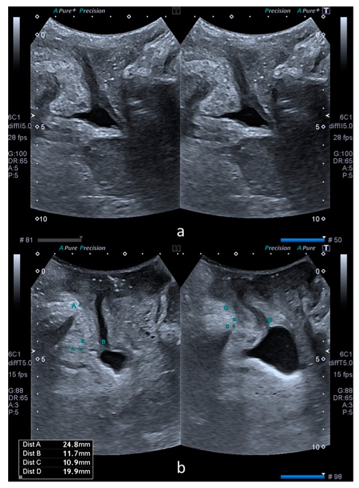

Página 14 · O fecho e o handoff POP-Q
A Lurdinha resolvida — e os números que abrem a distopia
Ao final, você vai:
- fechar a síndrome da dona Lurdinha;
- definir a conduta dela;
- ler o exame do períneo;
- enfrentar os números POP-Q que abrem a discussão seguinte.
A síndrome da Lurdinha: urge-incontinência → síndrome da bexiga hiperativa
Voltando ao Caso 1: a dona Lurdinha tem necessidade súbita de urinar, com perda antes de chegar ao toalete — isso não é perda por esforço, é urge-incontinência. Com urgência + polaciúria + nictúria, a hipótese é a síndrome da bexiga hiperativa. Todo o raciocínio do bloco converge aqui: o “como ela perde”, o mapa, o mecanismo, o traçado que a definiria — tudo aponta para a bexiga que contrai fora de hora.
A conduta: começar pelo clínico; farmacológico só se falhar
A conduta segue a escada da bexiga hiperativa. Pode-se começar a tratar já: fisioterapia + perda de peso + evitar substâncias que irritam a bexiga. Se não der certo, entra o tratamento farmacológico (que não é de primeira linha). Recapitulando o arsenal: anticolinérgicos (oxibutinina, tolterodina, darifenacina, solifenacina, trospium) + agonistas β3 adrenérgicos (mirabegrona); e, nas contraindicações ao anticolinérgico (arritmia, glaucoma de ângulo fechado, gestação e lactação), entra o β3 adrenérgico. A Lurdinha começa no degrau de baixo — como manda o mantra de todo o bloco.
Caso 1 · Lurdinha — resolvida
Corredor · fecho- Síndrome
- Urge-incontinência → síndrome da bexiga hiperativa (urgência + polaciúria + nictúria).
- Conduta
- Clínico primeiro — fisioterapia + perda de peso + evitar irritantes; farmacológico só se falhar.
- Períneo
- Episiotomia; retração de ruptura de 2º grau; vulva/vagina hipotróficas com sangramento discreto por atrofia.
Recuperação ativa: o que se leva do bloco
Antes dos números, um exercício que amarra tudo: distinguir bexiga hiperativa de incontinência de esforço, lembrar os cortes de PPE (60/90 cmH₂O), a distinção síndrome × hiperatividade detrusora e a farmacologia (muscarínico × β3 × contraindicações). É a hora de reativar o que foi construído passo a passo.
O exame do períneo: episiotomia, ruptura de 2º grau e atrofia
O exame ginecológico da Lurdinha traz achados que valem por si e ainda semeiam a discussão seguinte. No períneo: cicatriz de episiotomia e uma retração compatível com ruptura de 2º grau. Além disso: vulva e vagina hipotróficas, com sangramento discreto durante o exame especular — pela própria atrofia. São marcas de uma paciente G5P5, na pós-menopausa há oito anos: o assoalho que foi solicitado por cinco partos e o epitélio empobrecido pela queda hormonal.
Os números POP-Q crus — o enigma que abre a distopia
E então o exame registra, segundo a classificação da Sociedade Internacional de Continência, uma sequência de números: Aa +3, Ba +5, Ap −3, Bp −3, C −6, D −7, CVT 7. O que significam? Este é justamente o início da discussão de distopia — o prolapso. Os números ficam aqui como estão, crus, sem tradução: são o começo de outra conversa, a que decodifica o POP-Q, ponto a ponto, e estadia o prolapso. A dona Lurdinha entrega, no seu exame, a ponte entre a incontinência e a distopia — e é com esses sete valores que a discussão seguinte começa.
POP-Q da Lurdinha — cru, sem decodificar
- Aa+3
- Ba+5
- Ap−3
- Bp−3
- C−6
- D−7
- CVT7
Distopia (prolapso)
O exame da Lurdinha semeia a coluna ponto POP-Q do Mapa — os valores que a discussão de distopia vai ancorar nas estruturas, ponto a ponto.

Um teaser da distopia: a dinâmica do compartimento anterior ao esforço. O que os números POP-Q significam fica para a discussão seguinte — aqui eles permanecem crus.
Rada MP et al. Figure 1, Medicina 2019. Sob CC BY 4.0.
teaser · o POP-Q não é decodificado aquiQuiz-gold — recuperação ativa do bloco
A dona Lurdinha (60a, G5P5) relata necessidade súbita de urinar com perda antes de chegar ao banheiro, mais nictúria e polaciúria. A síndrome e a conduta inicial são:
- B — a virada. O “como ela perde” (urgência antes da perda) + urgência/polaciúria/nictúria fecham bexiga hiperativa; e a escada começa no clínico.
- A. A de esforço perde na força (tosse/espirro), sem urgência — e o sling seria degrau cirúrgico de outra síndrome.
- C. A atônica cursa com retenção/gotejamento e globo vesical, ausentes aqui.
- D. A fístula é perda contínua pela vagina com história de cirurgia/parto/RT — não é o padrão de urgência da Lurdinha.
Uma paciente com bexiga hiperativa tem glaucoma de ângulo fechado e arritmia. Sobre a farmacologia:
- B — a virada. Arritmia e glaucoma de ângulo fechado contraindicam o anticolinérgico; a via oposta (β3, mirabegrona) resolve.
- A. Oxibutinina é anticolinérgico — contraindicado e de pior perfil.
- C. Existe alternativa (mirabegrona) — dizer que “nada é possível” ignora a via β3.
- D. Imipramina é 2ª linha; promovê-la a primeira escolha aqui erra a escada.
Sobre a distinção que a banca mais cobra no tema, assinale a correta:
- B — a virada. A pegadinha-mãe: a síndrome é clínica; a hiperatividade detrusora é o achado do exame (contração não inibida no traçado).
- A. Tratá-las como sinônimos é o erro exato que a banca explora.
- C. Inverte os dois — troca qual é clínico e qual é laudo.
- D. A síndrome se diagnostica clinicamente, sem urodinâmica obrigatória; só a hiperatividade detrusora exige visualizar o traçado.
Os sete valores do exame da Lurdinha não são o fim — são a porta de entrada da distopia, onde cada ponto do POP-Q ganha significado e o prolapso é estadiado.